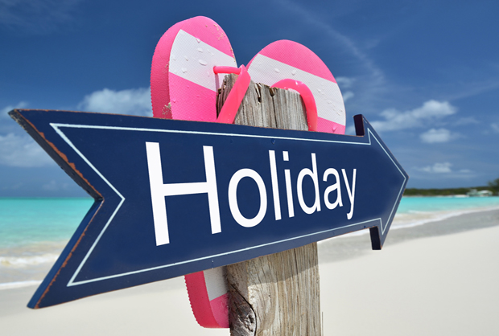

Despre mine
Deseori ne trezim cu întrebarea unde să plecăm în vacanță, ce să vizităm, ce fel de transport să alegem, cu cine să plecăm în vacanță? Apoi urmează tot felul de întrebări la prieteni, unde ei au fost, care sunt impresiile calatoriei lor. Și după o analiză bună a tuturor ofertelor parvenite de la companiile turistice, incepem să ne dam seama ce vrem cu adevarat.
Deci, mi-am propus pe pagina mea să descriu citeva locuri frumoase vizitate de mine, unele care o să le vizitez, dar imi par foarte interesante, și care sper să vă placă și vouă! Totodată, o să găsiți și o mică descriere despre transportul ales pentru călătorie, cît și galeria foto a acestor locuri frumoase. Deci, vizionare placută!!
Totodată, nu ezitati să vă dați cu parerea și să puneți un like, dacă va plăcut!!!
Orice critică este binevenită!!!